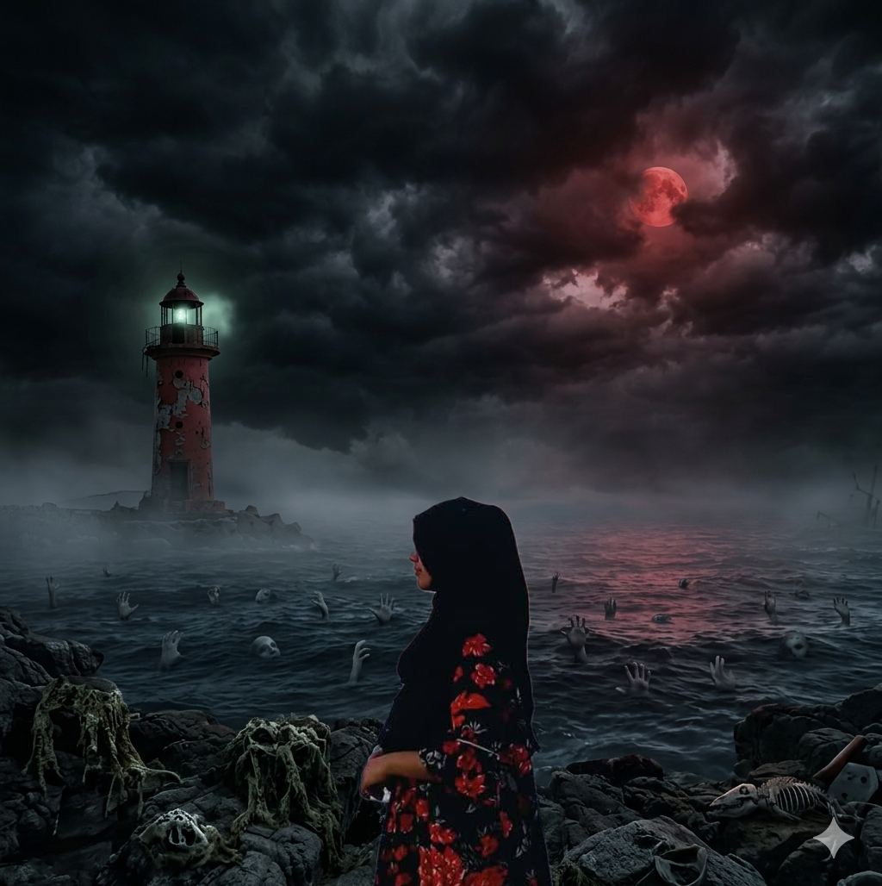

Abandon all silence
You wake on a cold metal table — no memory, only the reek of rot. Ward 13 of Blackridge Psychiatric Institute surrounds you. Abandoned by light, hunted by a creature that feeds on sound. Your flashlight flickers. The walls exhale. Someone is dragging their bones through the corridor.
Armed with only a fading beam and primal dread, navigate three locked zones: ground floor morgue, flooded basement, and the forbidden third‑floor asylum. The Patient adapts. It hears your heartbeat from two rooms away.
- 🔦 Real‑time flashlight battery — darkness breeds terror
- 💓 Fear meter — high panic distorts movement & vision
- 🕯️ Acoustic horror — every step ripples through the ward
- 🗝️ Three cursed keys — each unlocks a piece of the nightmare

The anatomy of despair
⛓️ The Patient
Former occupant of Ward 13 — medical files redacted, doctors erased. After the "Week 7 Incident", it shed humanity. Now a blind, sound‑driven entity whose touch unravels sanity. It doesn't chase; it waits for you to breathe too loud.
🏚️ Blackridge Asylum
Built over a forgotten colonial grave. Electroshock theatres, padded voids, rituals disguised as therapy. The institute sealed itself, but the walls remember every scream. Stagnant air still carries whispers of the vanished staff.
🔑 The Three Keys
Each key is tied to a ward tragedy: the night nurse’s badge, the warden’s rusted cross, the child’s music box. To escape, you must collect them — but with every key, The Patient grows more attuned to your pulse.
Sound is your blood
The game’s heart: acoustic stealth. The Patient navigates by echolocation. Running, bumping into objects, or staying too long in the dark spikes your Fear Meter — a pulsing red vignette that makes your character tremble, cough, and breathe heavier.
Use the environment: throw bottles to create distractions, hide in rusted wardrobes, and move only when the wind howls through broken windows. Your flashlight is salvation and a curse — enemies see its glow.
- adaptive AI: The Patient memorizes your hiding spots
- scarce resources: battery packs, adrenaline shots
- alternate ending: discover the true origin of Ward 13
"The first key lies beside the electroshock chair.
The Patient breathes in the corridor. Do not blink."
— fragment from the night nurse's diary —

Tetly
Lead developer, horror enthusiast, and the mind behind the “acoustic dread” system. Tetly crafted Ward 13 as a homage to psychological survival horror, focusing on vulnerability and sensory terror.
“I wanted players to fear their own heartbeat — the most honest monster in the room.”
🔮 Art direction, code, and shadow design by Tetly. Special thanks to the University Game Project team for enduring endless beta screams.
⬩ a descent into sound-based horror ⬩